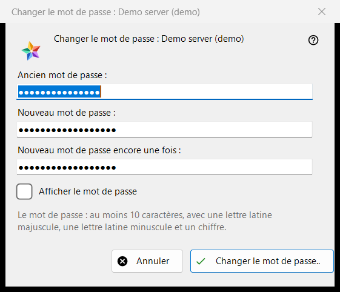
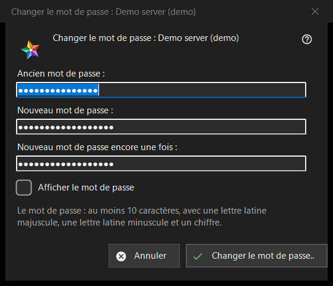

Changer le mot de passe
Objectif
Change le mot de passe de votre compte sur un serveur d'échange. La fenêtre s'ouvre depuis le bouton «Changer le mot de passe..» d'une entrée de serveur dans la section «Mes appareils» de la liste des ressources ; le bouton est affiché tant que ce serveur est en ligne. Le titre nomme le compte.


Dans cet ordre
- Saisissez l'ancien mot de passe.
- Saisissez deux fois le nouveau mot de passe.
- Appuyez sur «Changer le mot de passe..» ; «Annuler» ferme la fenêtre et n'envoie rien.
Les éléments
Les trois zones
«Ancien mot de passe :», «Nouveau mot de passe :» et «Nouveau mot de passe encore une fois :» ; «Afficher le mot de passe» les révèle. Les zones sont effacées à la fermeture de la fenêtre. La fenêtre ne fait que recueillir les mots de passe : le programme les envoie au serveur par la connexion de cette entrée.
La règle du mot de passe
La note indique : au moins 10 caractères, avec une lettre latine majuscule, une minuscule et un chiffre. La fenêtre le vérifie avant d'envoyer quoi que ce soit et nomme la partie en défaut, par exemple «Le mot de passe est plus court que 10 caractères.» ou «Le mot de passe n'a pas de chiffre.» ; elle dit aussi «Indiquez l'ancien mot de passe.» et «Les deux mots de passe diffèrent.». Le serveur applique la même règle et a le dernier mot.
Après le changement
En cas de succès, l'état indique «Le mot de passe est changé. Cet ordinateur continue de fonctionner, et les autres appareils du compte doivent se reconnecter.» Les refus : l'ancien mot de passe ne convenait pas ; trop de tentatives (attendez une minute et recommencez) ; le serveur a refusé le changement ; il n'y a pas de connexion au serveur (connectez-vous et recommencez).